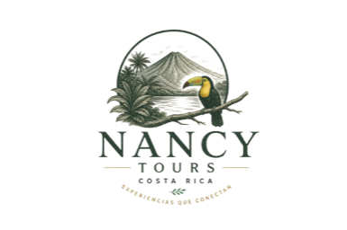

Lic. en Turismo
Credencial formal del ICT. Sé de qué hablo en cada parque nacional.
Tours guiados por Nancy — Licenciada en Turismo, 15 años caminando cada volcán, río y catarata de Costa Rica. Equipo de radios, GPS y la calma de saber a dónde vamos.
Creo tours organizados y experiencias personalizadas por todo Costa Rica, diseñadas especialmente para que disfrutes sin preocuparte por nada.
Organizo tours para grupos grandes desde 10 personas en adelante, así como experiencias privadas y personalizadas para familias, parejas o pequeños grupos de 2, 3 o 5 personas. Cada viaje se adapta a lo que ustedes desean vivir: naturaleza, aventura, descanso, hiking, playas, volcanes, cultura y momentos inolvidables.
Tú solo dime qué lugar sueñas conocer y yo me encargo de todo: transporte, organización, recorridos y cada detalle, para que solamente disfrutes, tomes fotografías hermosas y vivas Costa Rica de una manera auténtica y feliz.
Tú eliges el destino…
yo hago que el viaje sea inolvidable.
Credencial formal del ICT. Sé de qué hablo en cada parque nacional.
Recorrí cada provincia con grupos chicos y grandes desde 2010.
Equipo de comunicación en cada tour. Seguridad real, no improvisada.
Familias, tercera edad, jóvenes. Leo el grupo y ajusto el paso.
“Empecé caminando los senderos de Heredia con mi familia. Hoy soy Licenciada en Turismo y llevo grupos por todo Costa Rica desde hace quince años. Si vas conmigo, vas tranquilo: sé los caminos, conozco el clima, leo el grupo. Mi promesa es simple — terminar el día cansados, pero felices.”
